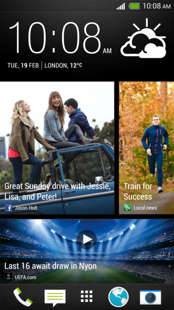

Checking feeds on your Home screen
Stay in touch with friends or get the latest about your interests right on your Home screen.
Set up which social networks, news sources, and more will appear.
[generic phone name] refreshes the stream every time you return to the Home screen.
- Tap a tile to view more details or to comment on a post or status update.
- Scroll to the top and pull down on the screen to manually refresh the stream. This also shows icons for posting on social networks, searching, and more.
Tip: If the Feeds view is set as the main screen, you can press
 or tap the status bar to scroll to the top.
or tap the status bar to scroll to the top.
- Tap to choose the type of feeds to display. Select Highlights to see other contents such as upcoming events, frequently-viewed photos in Gallery, and more .
